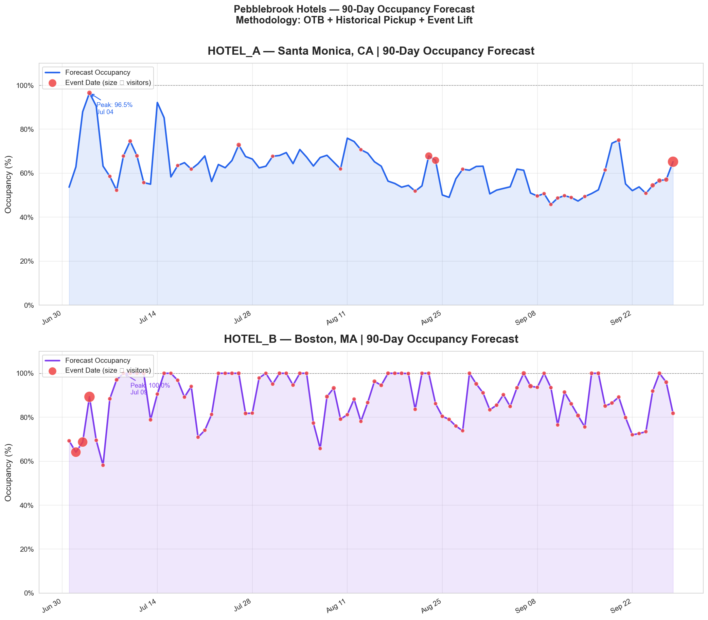
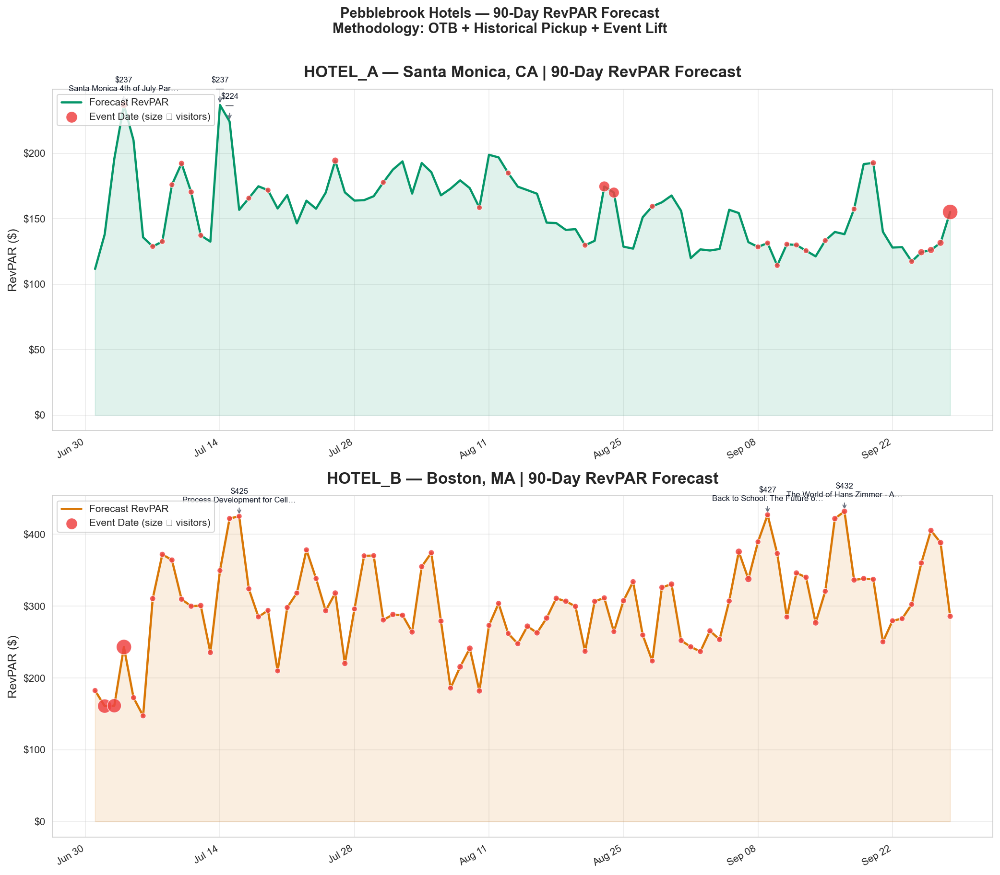
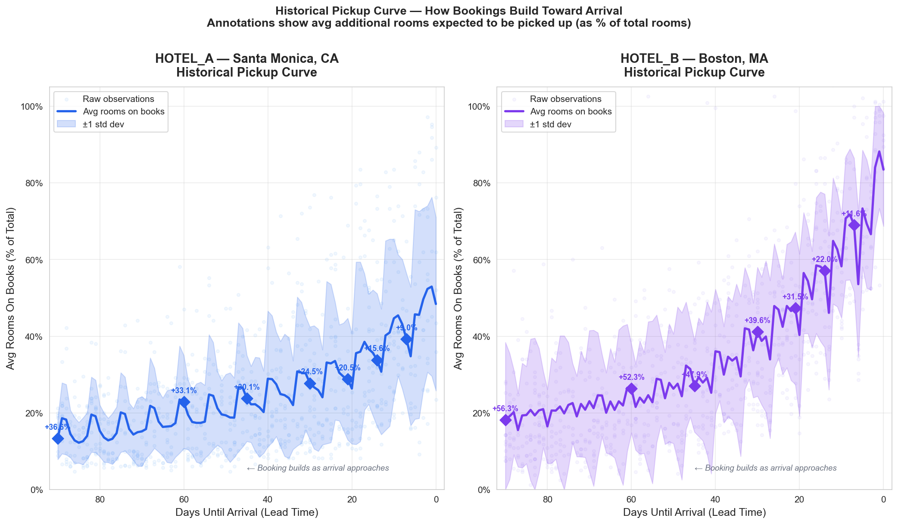

Pebblebrook 90-Day Forecast
Two hotels with opposite problems — and $451K–$528K sitting on the table.
The Short Version
Boston is nearly sold out for fall — and still underpricing its highest-demand nights.
Santa Monica has 40% of rooms sitting empty for six straight weeks with no plan to fill them.
The forecast found both. The recommendations fix both.
| Hotel | Problem | Action | Revenue |
|---|---|---|---|
| Boston | Underselling 18 high-demand nights | Tiered rate increase by occupancy band | ~$193K |
| Santa Monica | 41-night soft window at 59% occupancy | Targeted promotion — act now, guests decide in April–May | ~$258K–$335K |
How the Forecast Works
For each future night, three questions:
- What's already booked? From OTB data — this is fact, not a prediction.
- How many more will book before check-in? Measured from 26 actual booking snapshots in the data.
- Is there an event pulling demand? From events data, scaled by hotel size and capped so one festival doesn't distort the whole forecast.
Forecast RevPAR = Forecast Occupancy × Current ADR
Every number traces to a specific row. Nothing is a black box.
How Pickup Rate Is Calculated
Each business_date appears across multiple OTB snapshots — that progression is the booking curve for that stay date.
- Track the booking curve — observe how reservations accumulate across snapshots for each stay date
- Define final demand — use the closest snapshot to check-in (~5 days out) as the final demand proxy
- Measure remaining pickup per bucket — for each lead-time bucket (90d, 60d, 30d, 14d, 7d):
remaining pickup = final booked rooms − rooms booked at that bucket→ converted to % of total rooms - Average across all dates — repeat for every historical stay date, then average by bucket → one pickup curve per hotel
How Event Weight Is Calculated
Each stay date is matched to events in the same market. Visitor counts are aggregated, normalized by hotel size, then dampened and capped into an occupancy lift factor.
- Match events — find all events in the same market on that stay date
- Sum visitors — aggregate expected visitors across all matching events
- Normalize by hotel size —
visitor density = total visitors / total rooms(demand pressure relative to capacity) - Convert to occupancy lift —
event weight = visitor density / 1000(damping: not every visitor stays at this hotel), capped at 15% to prevent mega-events from distorting the forecast
What the Numbers Show



Boston — nearly full, leaving money on the table
Boston demand materializes strongly within the 90-day booking window. The data shows 56 occupancy points — roughly two-thirds of final demand — still book within this window. By the time a promotional rate would matter, the hotel is already full. The lever here is rate, not volume.
Santa Monica — room to grow, and a deadline to act
Santa Monica guests book 45–60 days out. That means April and May are the window to move August demand. Wait until July and those travelers have already booked elsewhere.
Recommendation 1 — Boston Rate Program · ~$193K
Eighteen nights where the hotel has pricing power it isn't using. Three tiers:
6 nights at 100% occupancy. The room will sell regardless. Rate is the only variable.
| Date | Current ADR | Driver |
|---|---|---|
| Sep 17 | $432 | Hans Zimmer |
| Sep 9 | $427 | Translational Digital Pathology Summit |
| Jul 16 | $425 | Process Dev Cell Therapies Summit |
| Jul 15 | $422 | Weird Al @ Boch Center |
| Sep 16 | $422 | LSX World Congress USA |
| Sep 26 | $405 | John Mulaney @ Boch Center |
12 nights at 91–98% occupancy. Strong demand, a few rooms left. Conservative $30 lift assumes some guests reprice out.
85–89% occupancy. Monitor pickup over next 7 days. Promote to Tier 2 if occupancy hits 92%.
Recommendation 2 — Santa Monica Demand Push · ~$258K–$335K
Six weeks. No major events. School back in session. Leisure travel drops. The forecast shows 4 in 10 rooms empty every night from Aug 4 to Sep 13.
The window to act is now — Santa Monica guests are making August plans in April and May.
| Scenario | Extra Rooms/Night | 41 nights × $258 ADR |
|---|---|---|
| Conservative (8 pt occupancy lift) | 25 rooms | ~$265K |
| Optimistic (10 pt lift) | 31 rooms | ~$328K |
An 8–10 point lift from a targeted soft-period promotion is the low end of what these campaigns typically deliver.
Recommendation 3 — Flag the Boston Overbooking
32 date-rows in April showing occupancy above 100%. The data doesn't tell us whether that's intentional overbooking or a system sync issue — but Operations should know either way.
Data Validation — Before Any Forecast Ran
Three problems surfaced immediately after loading the data.
The data was multiplying itself.
Joining the events and booking tables naively produced 28,276 rows from a join that should have preserved the original 4,732 OTB rows — a 6× inflation. Each event row was attaching to every booking row for that date. Fixed by pre-aggregating events to one row per date before joining. If this had gone unnoticed, every forecast number downstream would have been wrong.
Boston showed rooms sold beyond capacity.
32 date-rows showed occupancy above 100% — more rooms sold than exist. Either real overbooking or a system error. Capped at 100% for forecasting, flagged to operations. This became Recommendation 3.
Revenue math checked out.
ADR × rooms sold should equal revenue sold. Largest gap: $1.36. Rounding, not a problem. Accepted.
The forecast only ran after all three cleared.
How I Built This — AI as Co-Pilot, Not Autopilot
I act as the decision-maker; AI agents handle the syntax. Architecture first, code second. Every AI output gets verified against the actual data before anything downstream runs.
The loop I ran for every stage
Stages in practice
| Stage | Agent / Skill | Output | What I verified |
|---|---|---|---|
| 🟢 Data Prep | @pipeline-architect |
1_data_prep.py, merged_data.csv (28,276 rows) |
Caught fan-out + occupancy outliers + revenue integrity check |
| 🟡 Reconcile | /reconcile-data |
1b_data_patch.py, reconciled_data.csv (4,732 rows) |
Fan-out resolved, occupancy capped, integrity confirmed |
| 🟠 Forecast | @pipeline-architect |
2_forecast_model.py, forecast_90days.csv, 3 charts |
Formula audited row-by-row; zero residual |
| 🔴 Translate | @business-strategist |
SUMMARY.md |
Every revenue figure cross-checked against CSV |
Why verification can't be skipped
The fan-out error — data inflating 6x — wasn't flagged by the AI. It surfaced when I checked row counts manually. The AI wrote the merge code without error; the data problem was invisible to it. AI is fast and fluent. It doesn't know when it's wrong.
Four checks every number had to clear
- Occupancy ∈ [0%, 100%] on every row
rooms_sold + left_to_sell + ooo = total_roomsexactlyADR × rooms_sold ≈ revenue_soldwithin $1.50 tolerance- Event join must not increase row count
This is the same pattern I built at OMEL AI for enterprise chatbots — intercept output, validate against domain rules, block anything that can't be proven. That layer is what turns "AI-generated" into "production-trustable."
What Would Make This Better
| What's missing today | What it would take |
|---|---|
| Optimal rate recommendation (not just "raise it") | Price elasticity layer + comp-set data |
| Competitor awareness | OTA comp-rate feed — react when others reprice |
| Live updates | Replace 26 static snapshots with daily OTB stream |
| Cancellation response | Already modular — wire to event cancellation feed |
| Dashboard visibility | Output connects directly to Tableau via FastAPI endpoint |